Unfading Elegance
20几岁时我很羡慕一个姐姐，国际舞蹈冠军。我们在一个圈子里玩，朋友的朋友不熟的那种。那年她刚退役，不用出国比赛有空参加饭局，大佬们都对她趋之若鹜。前段时间听说她离婚了。剪了短发，年轻了，又回到全世界各地飞的生活。她在小红书上发很多翩翩起舞的视频，看起来更愉悦轻盈了。快四十岁的她，又回到令人羡慕的样子。网上说女人中年危机三大表现：医美，健身，离婚。男人中年危机三大表现：开跑车，创业，外遇。医美和健身都是相当长久且麻烦的事情，但是我从中受益良多。还有一样是Spa，这三者加起来，是我个人抗衰的良药。
我最常去的 Auriga Spa藏在建国西路窄小马路边梧桐树下1930年代石库门酒店里的水疗，低调无人知
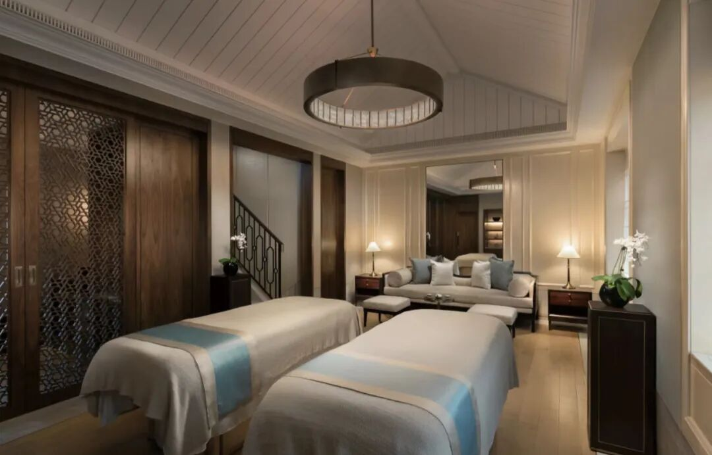
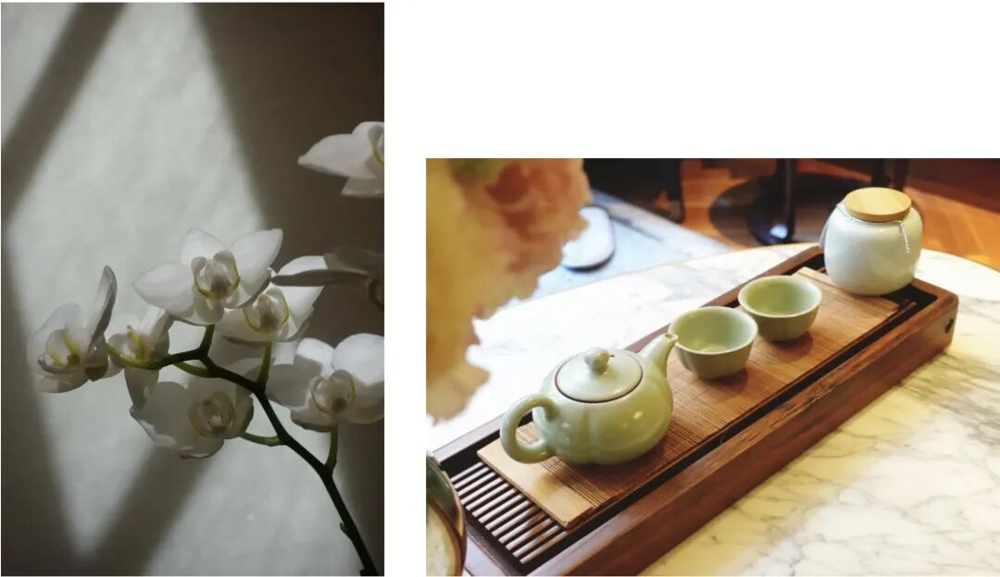
即使是周末，八间房间中最大最奢华的套间我一般都能随时约到，不用加收费也不会急着赶你走，附带的泳池和健身房一人独享。但服务、精油、按摩手法不会因此就和华尔道夫、宝格丽、安达仕的水疗有差距，堪称性价比之王。环境还更甚一筹，可能是 Jaya 设计风格将法式优雅和上海在地文化融合，恰到好处地种在我的心巴上。插花常年是兰花和芍药。
精油随着月相周期调节不同生理和情绪。
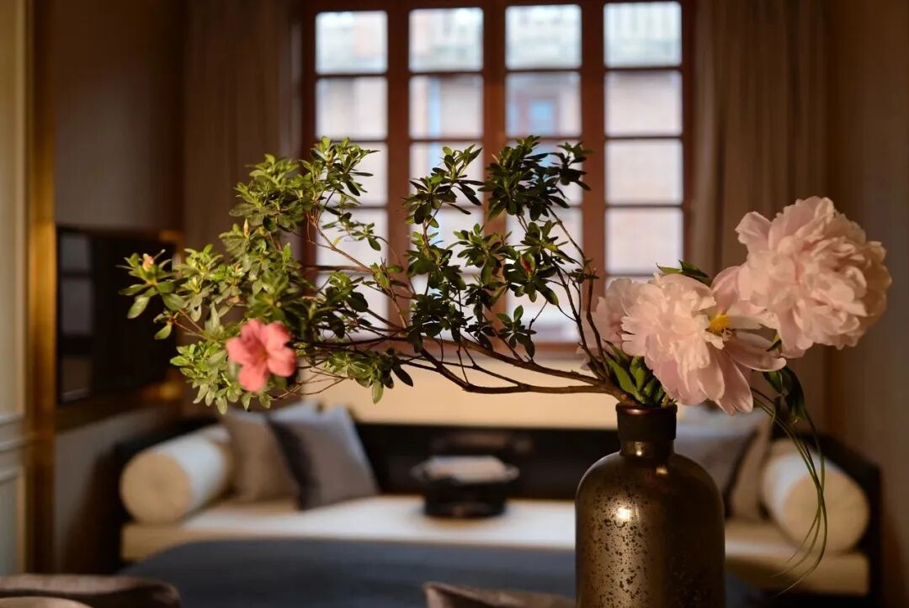
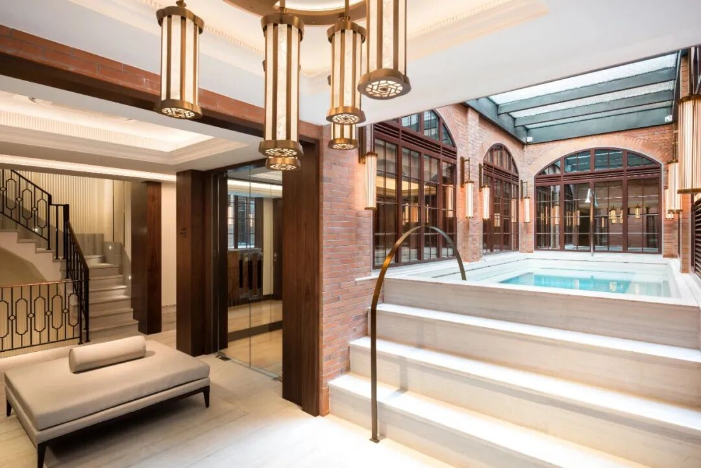
常来Auriga的人到底是谁？这个问题一直困扰着我。因为每次来都空空荡荡，真的没有别的客人了…我猜来这里的女人不一定有多美，但一定有好品味吧？毕竟好品味并非与身俱来，须自小见识过太多好东西，拥有过、抚摸过、痴迷过、享受过，方能区分出细微的质感和颜色区别。
而能够正视自己容貌焦虑，并积极去做改变的中年妇女，非常令人羡慕。她们又有时间，又有钱，还有什么不能成功的呢？
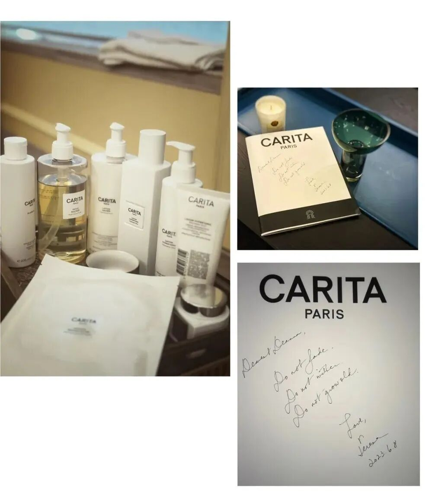
上周在Auriga试了全套CARITA湖萃面部护理，终于第一次见识到了Auriga的会员 —— 章小蕙。听说她搬来上海后，经常来这里做全套 CARITA。
能和偶像在同一酒店同一间房间的同一个按摩床，还享受着同一个按摩师的经历，让我立即从按摩床上弹射起来！按摩师很是贴心，还帮忙请章小蕙在扉页上签名，章小姐人特别好，很开心我喜欢她，还贴心地在扉页上写了赠语送我：
Do not fade. Do not wither. Do not grow old.
不要褪色，不要枯萎，不要老去。
这句话，叫生活跌入谷底的人重新鼓起勇气。我把它镶在相框里，装裱在梳妆台前。记得上一次低谷时，是她的那句“低谷是上帝给你的悠长假期”、“生活越是负，你越要是正面”，以至于我从容应对，过成了人生中最快乐的年华。2018年开始就关注她的公众号，她朗读莎士比亚和劳伦斯菲林盖蒂《和毕沙罗回到巴黎》 还有《美得不得了的白先勇》都很喜欢。还跟着她种草了Augustinus Bader。而在建业里嘉佩乐度过的惬意时光，是我们的不约而同，心心相惜。
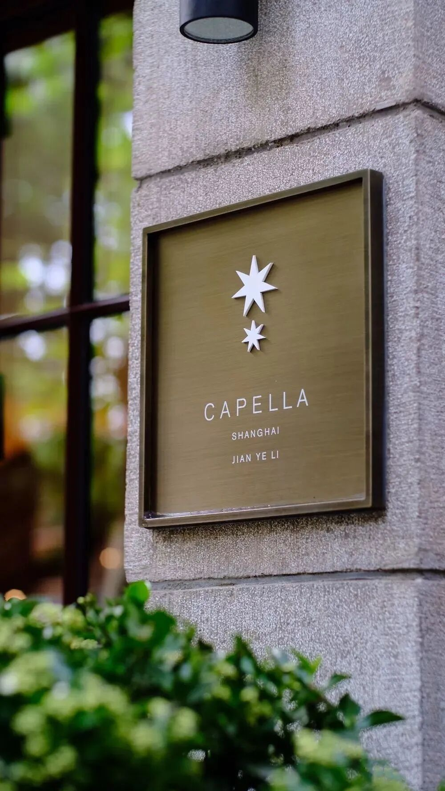
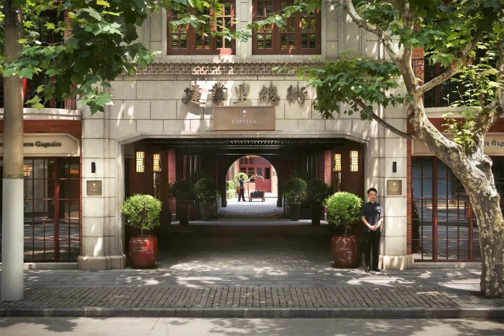
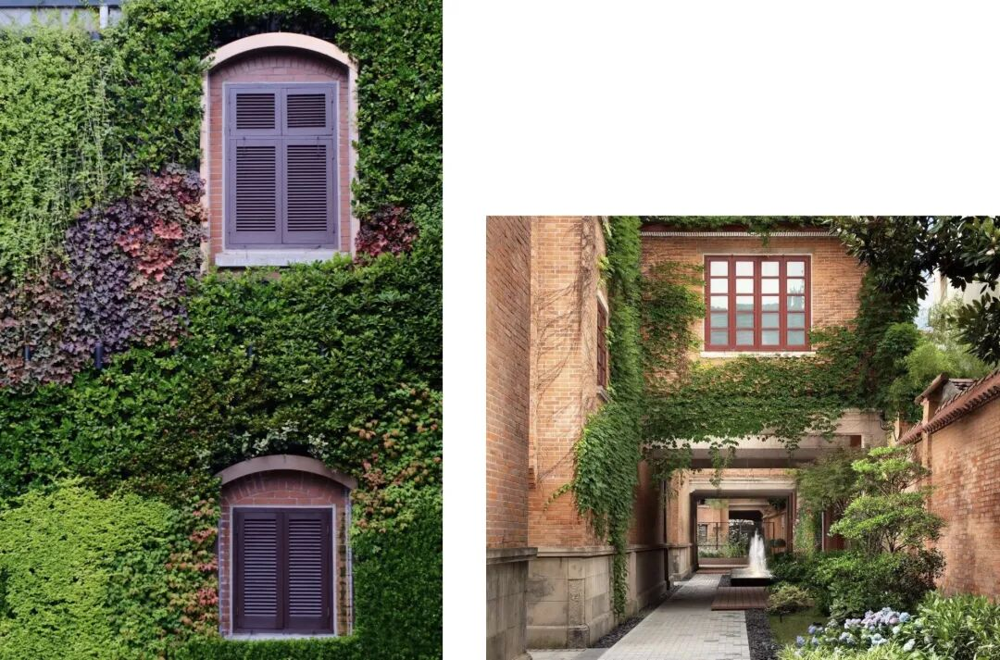
上海有三家超顶级的酒店，房价四开头比普通酒店贵得多：上海中心的J hotel, 宝格丽酒店和Capella
Capella离家最近，去得最多，一天中的大部分时刻，都能在那里寻得优雅。
Capella最美的时刻，是傍晚五点。去 Le Comptoir de Pierre Gagnaire 晚餐，侍者将阳台的落地窗都打开，静谧黄昏散发出迷人的光晕，整个建业里此刻都空无一人。带一瓶老年份的拉图，75%赤霞珠和25%美乐的混酿，细嗅有明显的烟熏和橡木桶的味道。不够的话还有一瓶拉菲，不一会儿就微醺，和英俊的摩纳哥侍者聊天，随心所欲，所有的压抑似乎都在Capella的黄昏里消散了。
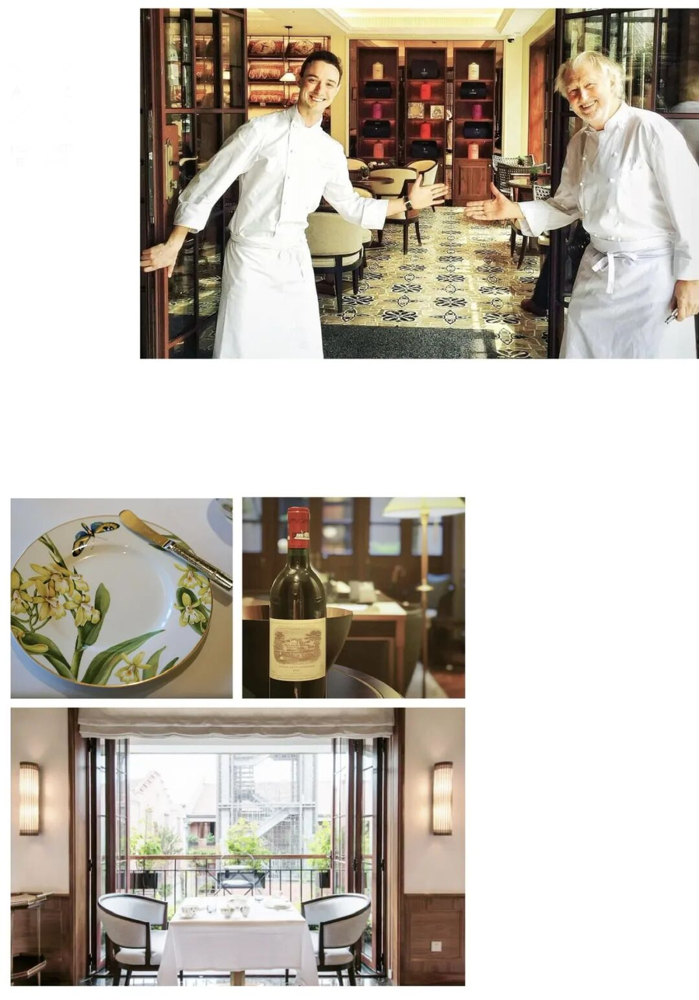
清晨，又是最不一样的时刻。建国路恢复了老上海里弄的嘈杂和市侩，有自行车铃铛清脆的声音，有豆浆油条热乎的气味。早餐从Christople 银器到摆盘，简约优雅到极致。La-boulangerie烘培坊永远香气四溢。
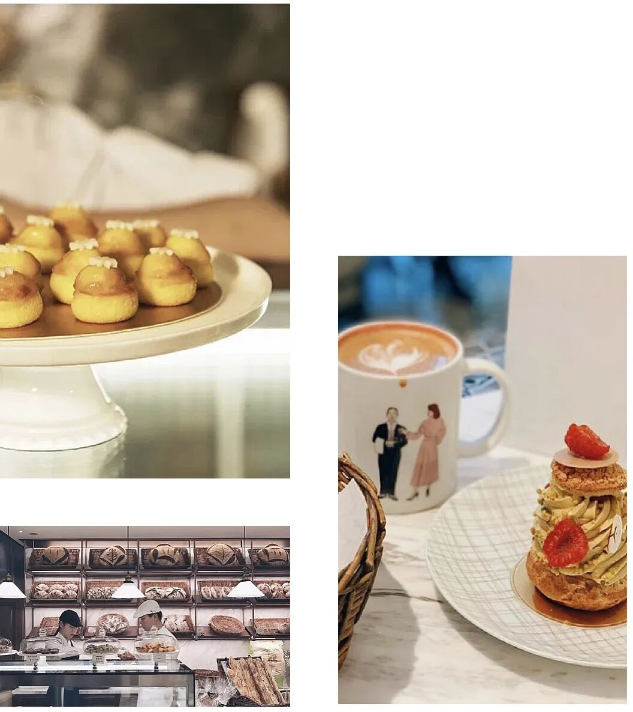
下午，是我第一次和Capella的相遇。2017年的酒店开幕画展，我带妈妈回到她们小时候的石库门房子里，客堂间被改造成了画展，但我们进入的时候，开着灯，照得一室暖黄，有种回家的温暖。
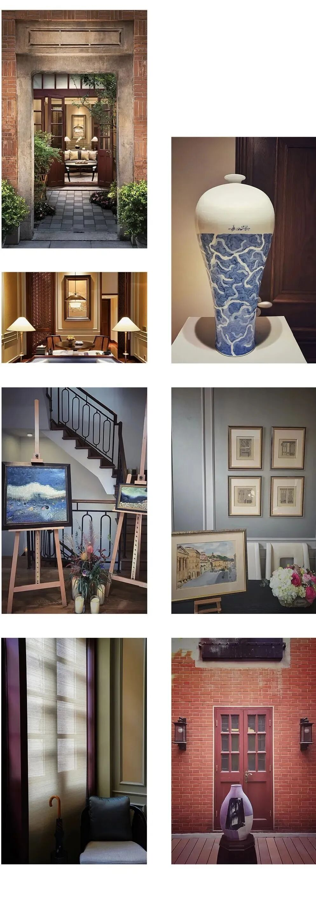
奥黛丽赫本说：优雅是唯一不会褪色的美
海明威说：勇气是在压力下的优雅
希望我们也能像章小姐一样有勇气从容面对时光做一个永不褪色的优雅美人
…

2023.06.11
——END